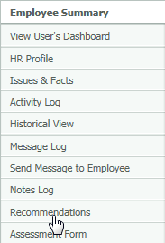
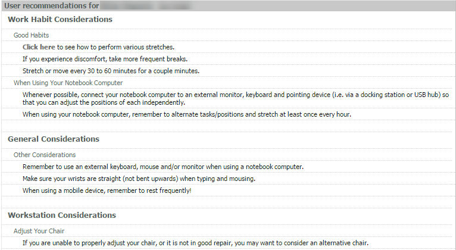

The Recommendations page in the Employee Summary lists the user's recommendations as defined by the user's self-assessment and any evaluations.
To view Recommendations for a user:
From the Employee Summary, click the Recommendations link from the menu on the left.

This page shows all the recommendations for the user. Only a subset of these may appear on emails.
